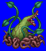
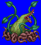
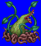
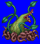

Height: Stalks: 4-15 meters, Insect sacs: 25 cm. Weight: ???
Habitat: Jungle Origin: Tropical area
Meaning: Greek "Nepenthes" (mindless)
Nepenthe is a carnivorous plant that eats insects. The plant is composed of two parts, the stalks and insect sacs. The stalks intertwine about the surrounding foliage, and insect sacs protrude from the stalks. The plant catches insects by submerging them in a sticky, highly permeable liquid. It then uses its digestive juices to extract nutrients from the captured insects. In games, its prey is usually adventurers rather than insects.